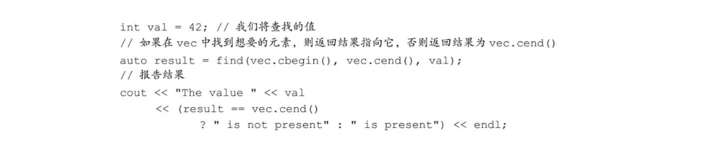

《C++ Primer 5th》第十章中的重要知识点，这一章的内容是介绍STL相关的泛型算法。
泛型算法是为了丰富容器的操作而设计出的算法，定义在 algorithm & numeric之中。
算法输入通常不是整个容器，而是与容器相关的迭代器。

泛型算法的操作都是在适配器之上进行的，因此不会对容器本身进行操作，他们自身不能改变容器的大小。
算法可以分为只读，改变元素，以及重新排序
只读算法
以numeric中的accumulate算法为例，算法要求迭代器指向容器元素类型与函数第三参数的类型一致，第三参数为初值，当为int时代表累加，当是字符串的的时候表示容器内各字符串相连在一起。1
2
3
4
5
6
7/*
vector<int> vec
vector<string> v
*/
int sum = accumulate(vec.cbgein(), vec.cend(), 0); // right, int
string sum = accumulate(v.cbegin(), v.cend(), str("") ); // right, string
string sum = accumulate(v.cbegin(), v.cend(), ""); // wrong, const char* is not compatiable with string
这里需要注意的是字符串字面值类型为const char * 而非 string，因此不能直接将字符串字面值作为第三参数。
迭代器参数数目
当涉及到对两个容器序列的操作的时候，有些算法会使用三个迭代器参数，有些算法使用四个迭代器参数。三个参数的算法例如equal，前两个参数为第一个序列的首末迭代器，第三个参数为第二个序列的首迭代器，这时候算法默认两个迭代器的长度一致；四参数算法则完整的读取两个序列的首末迭代器。
写容器算法
需要保证写入的内存都是有定义的，否则为非法操作1
2
3
4
5
6
7vector<int> vec;
fill(vec.begin(), vec.end(), 0); // 将每个元素重置为0
fill_n(vec.begin(), 10, 0); // 将begin开始的10个元素置0，存在风险，容器有可能为空
/*使用back_insert获取尾部迭代器*/
auto it = back_inserter(vec);
*it = 40; // OK
fill_n(back_inserter(vec), 10, 0); // OK
重排元素算法
某些算法会重排容器中元素的顺序，一个明显的例子是sort。调用sort会重排输入序列中的元素，使之有序，它是利用元素类型的<运算符来实现排序的。
重排算法不能对容器本身的元素进行删除操作，具体对元素的删除还需要直接对容器进行操作。
定制算法
某些算法，在运行时会调用容器元素的操作符，例如sort默认调用小于号运算符。对于那些没有定义相应运算符的元素，或者当我们希望自由选择使用的运算符的时候，我们可以使用自定义函数并作为参数传入算法的方式来解决。这个参数或者说自定义函数被称作谓词（predicate）
谓词是一个可调用的表达式，其返回结果是一个能用作条件的值。标准库算法所使用的谓词分为两类：一元谓词（unary predicate，意味着它们只接受单一参数）和二元谓词（binary predicate，意味着它们有两个参数）。
2
3
4
5
bool isShorter(const string & s1, const string & s2){
return s1.size() < s2.size();
}
sort(words.begin(), words.end(), isShorter); // 按由短到长的顺序将words排序lambda表达式
「lambda函数」是一个对象。因为它可以像函数一样被调用，类不能被调用，只有对象才可以。
更准确地说，「lambda函数」就是一个「函数对象」。
lambda的语法其实一个语法糖，编译器会将它“翻译”成一个函数对象，然后再编译。
1 | [capture list] (parameters) -> return type {function body} |
lambda函数没有默认参数值，因此实参与形参数目必须一致
lambda表达式可以使用所在的函数中的局部变量，只要在捕获列表中“捕获”即可，这种方式可以让部分只接受一元谓词的算法也适配多参数的多元谓词
bind函数
使用c++11中的bind函数与placeholder也可以解决一元谓词变多元的问题。
1 | auto g = bind(f, a, b, _1, c, _2); |